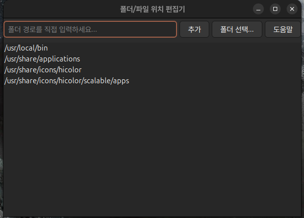
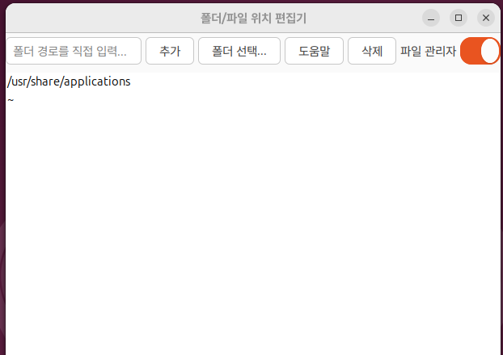

Folders for quick access. Click a path to navigate, or select a file to open it in gedit.
Using Ubuntu 24.04 environment, dependency: libgtk-3-0t64 (>= 3.24.41)
Compiled using gcc version 13.3.0
✅ 첫 번째: folder1.0 압축 풀고 deb 파일 설치를 진행하세요.
✅ 두 번째: 수정된 업그레이드 파일(folder.zip)의 압축을 풀면 실행 파일이 생성됩니다.
sudo mv folder /usr/local/bin
💡 추가 기능: 삭제 기능 및 관리자 폴더 이동 전용 스위치가 추가되었습니다.